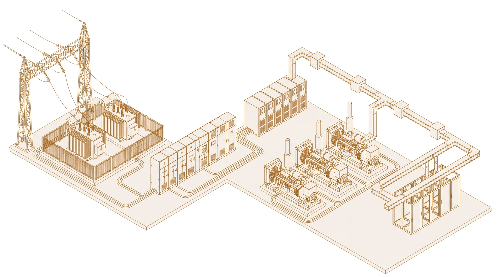
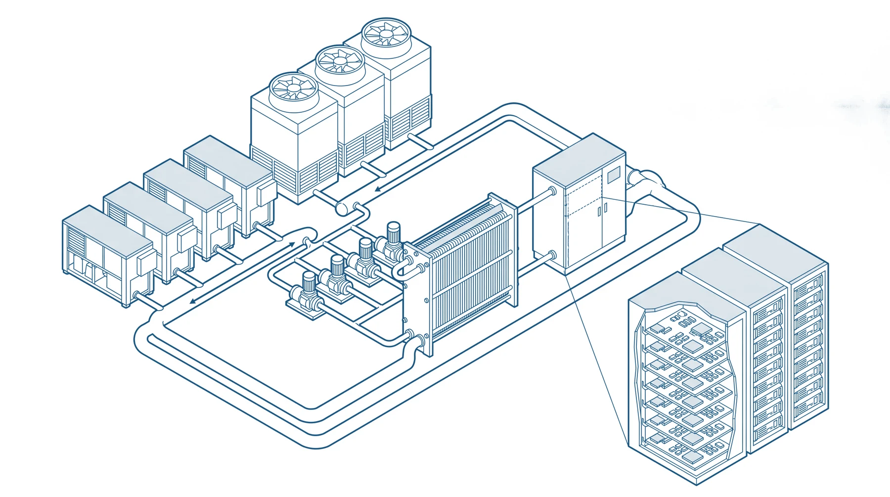
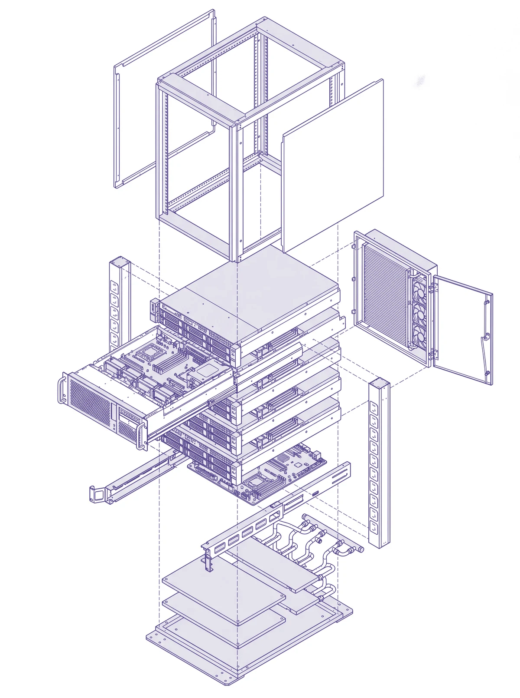
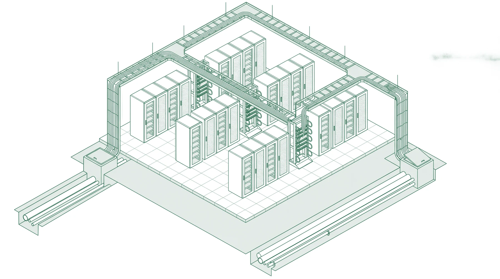
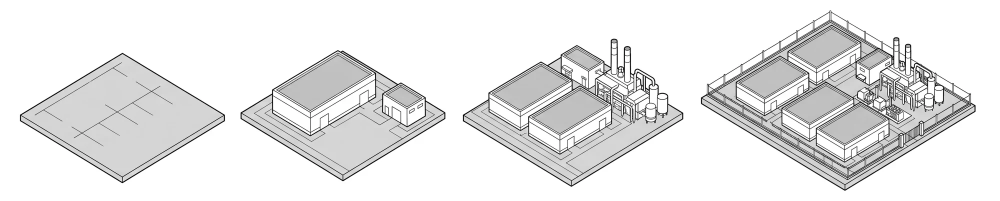
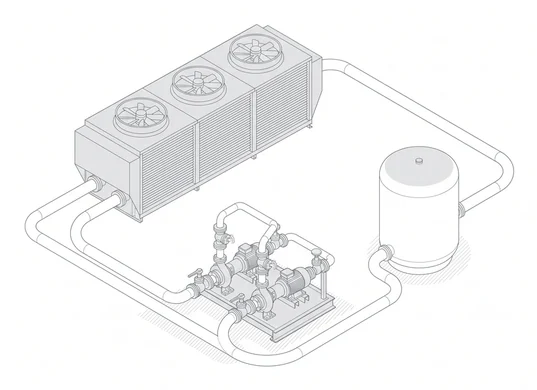
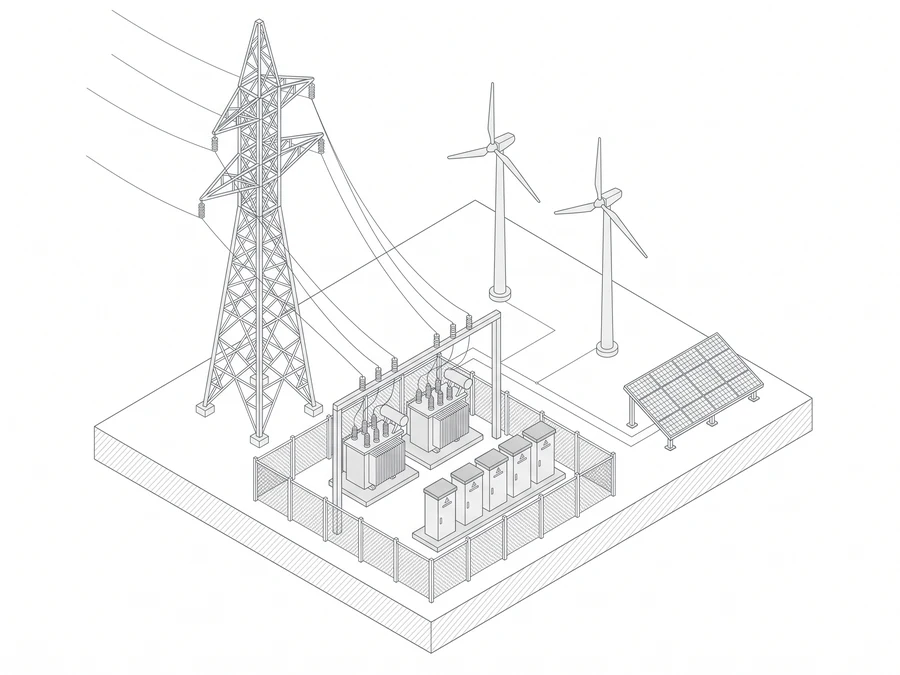
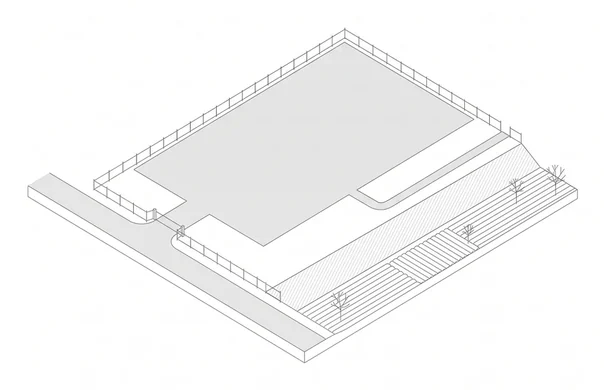
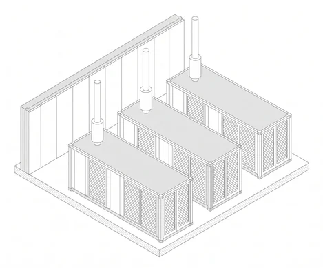
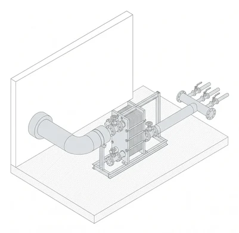

Layer 00 · General arrangement
The future of AI begins with
infrastructure.
Codex Space engineers the physical foundation that artificial intelligence is created, trained and scaled on. This page is that foundation, taken apart one layer at a time.
- First campus
- 550 MW IT load
- Programme
- 3 GW
- Status
- Phase 01 ongoing
Layer 01Foundation
Everything above the slab depends on what is under it.
Earthworks, pad foundations, service trenches and the roads a construction programme will run on for years before anything above ground is recognisable as a building. It is the least visible layer and the one that cannot be revisited.
- Scope
- Land development · civil works
- Approvals
- Geotechnical · environmental
- Sequence
- Precedes all trades
![Isometric drawing of the groundworks read left to right as a construction sequence: a haul road with a compaction roller and graded stockpiles of fill; a benched cut-and-fill platform shown in section; pile caps at three stages, from open excavations with reinforcement cages standing in them to boxed formwork to stripped concrete; a reinforcement mat over blinding with edge shuttering and propping, ready for a slab pour; an open trench cut away to show a multi-way duct bank bedded in sand and running into a precast circular chamber; and the sectioned edge of a poured slab at a construction joint.](assets/draw/foundation.webp)
Layer 02Power
Grid to rack, procured as one chain.
Power availability is the binding constraint on a campus of this scale. It is settled before anything else can be. High-density distribution for GPU-intensive workloads, and redundancy that holds the chain when the grid does not.
- Intake
- HV gantry · on-site substation
- Conversion
- Transformers · switchgear
- Continuity
- UPS · standby generation
- Distribution
- Busway, PDU, rack

Layer 03Cooling
Specified at design stage, not retrofitted.
Cooling is the largest single draw an operator controls, which makes it the first thing drawn rather than the last thing added. Liquid at the die, a closed circuit, and loop chemistry planned across the life of the asset instead of handled at commissioning.
- Topologies
- Direct-to-chip, rear-door, immersion
- Circuit
- Closed, chiller, heat exchanger
- Water
- Treatment · plant protection

Layer 04Compute
The smallest unit the whole campus is built around.
Every layer above and below exists to keep this cabinet powered, cooled and connected. Take it apart and the campus is legible: chassis, cold plates, distribution strips, a rear door that is itself a heat exchanger.
- Workload
- Training, inference, HPC
- Density
- Accelerated compute
- Heat capture
- At the die

Layer 05Network
Two routes that never share a trench.
Training and inference move very large volumes. Route diversity has to be secured in the ground early, while the trenches are still a negotiation rather than a cost. A second path bought later is rarely a second path at all.
- Paths
- Physically separate ducts
- Handover
- Independent meet-me rooms
- Distribution
- Cross-connect · structured cabling

Layer 06Operations
A facility is only as good as the shift running it at three in the morning.
Power, thermal, network and security are observed from one place, continuously. Reliability is structure, the way the systems were drawn together, rather than a percentage in a service schedule.
- Command
- Integrated NOC · SOC
- Physical
- Perimeter, biometrics, CCTV
- Cyber
- SIEM · threat detection
- Coverage
- Continuous
Layer 07Scale
The most efficient megawatt is the one not yet built.
Modular build-out aligns capital with tenant ramp-up, so a hall is never powered and cooled while it waits to be occupied.

Layer 08Sustainability
A campus this size should have to answer for itself.
The objections are specific, and most of them are reasonable. A 550 MW load sits on a grid that houses draw from. Cooling wants water in a city that has rationed it. Land that becomes a campus was something else first. A project that cannot answer those three has not earned the site.
So they are settled in the order they bind, before anything is poured. That is why they appear in this drawing set at all, rather than in a report published once the halls are already standing.
![Isometric drawing of the campus environmental arrangement: wind turbines and a tilted photovoltaic array on open ground, an outdoor substation of transformers and switchgear, a long data hall with roof plant, and a bank of dry air-cooled coolers joined to the hall by a continuous pair of pipes that run out and return as an unbroken circuit. Beside them a water treatment skid and a single storage tank, with a planted drainage swale and a line of trees along the front boundary. There is no cooling tower, no plume and no discharge.](assets/draw/sustain.webp)
- Water
- Closed-loop cooling, so heat is rejected without evaporating drinking water. Make-up demand is met from treated effluent rather than from the municipal network or from groundwater.
-

- Power
- Contracted as new renewable capacity added to the grid, not drawn from what already serves the city. Sited where transmission exists, so no new corridor is cut through inhabited land.
-

- Land
- Industrial-zoned before it was ours. No agricultural conversion and no displacement.
-

- Air and noise
- Standby generation runs on outage and scheduled test only, inside daylight hours, with the test calendar given to the neighbouring wards rather than filed.
-

- Heat
- Rejected heat is a resource this campus currently wastes. Recovery is under review, and the review will be published whether or not it is favourable.
-

Layer 09Founders
The names on the drawing.
Every sheet in a set carries the names of the people answerable for it — drawn by, checked by, approved by. A campus that does not exist yet is a promise, and a promise is only worth the people who made it. These are ours.
-
( 01 )
Chief executive officer
To be announced
One sentence on what they have delivered before, in numbers rather than adjectives.
-
( 02 )
Chief financial officer
To be announced
One sentence on what they have delivered before, in numbers rather than adjectives.
-
( 03 )
Chief technology officer
To be announced
One sentence on what they have delivered before, in numbers rather than adjectives.
Layer 10Expansion
The AI revolution needs a new foundation.
Hyderabad is the first campus of a three gigawatt programme, not the whole of it. The balance is planned across further sites. Tenancy, capital and delivery conversations are open now.